CrystEngKit: From CIF files to ESP, NCI, and QTAIM plots in a few clicks — a practical suite for supramolecular chemistry and crystal engineering computations.
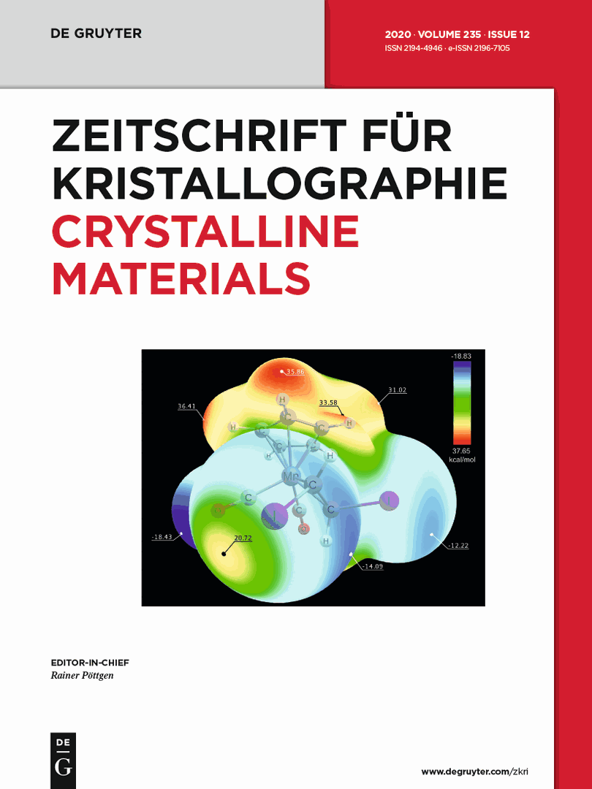
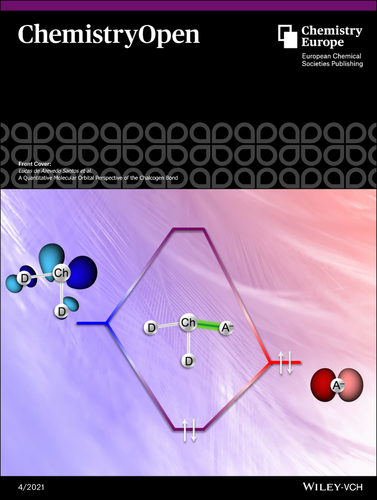
ESP maps, NCI plots, BCP/bonding paths, and HOMO-LUMO shapes are not only illustrations of your work but also good ideas for journal cover art.
Overview
CrystEngKit is a practical GUI suite for basic quantum-chemical computations and visualization in supramolecular chemistry and crystal engineering. It helps experimental researchers:
- prepare ORCA/Gaussian input files;
- run ORCA calculations;
- monitor results; and
- turn finished calculations into figures and summary text.
Typical input formats are:
.xyzfiles;- existing ORCA
.inpfiles; .ciffiles from single-crystal X-ray diffraction, publications, or the Cambridge Structural Database (CSD)csd;- 3D
.mol,.sdf, or.sdfiles; and - ChemDraw
.cdxml,.cdxm, or binary.cdxfiles.
CDXML/CDXM files with complete stored xyz coordinates are imported natively; 2D-only ChemDraw drawings and binary CDX use Open Babel for conversion and optional 3D generation. Generic .inp files are treated as ORCA inputs, not Gaussian inputs.
The suite is built around widely used, freely available academic/freeware programs. ORCAorca-site is used for quantum-chemical calculations. Multiwfnmultiwfn-site is used for:
- wavefunction analysis;
- ESP/NCI cube generation; and
- QTAIM critical-point analysis.
CrystEngKit does not replace these programs; it provides a practical shell that helps experimental chemists make the first steps into quantum-chemical calculations and convert results into:
- publication-ready images;
- tables; and
- text.
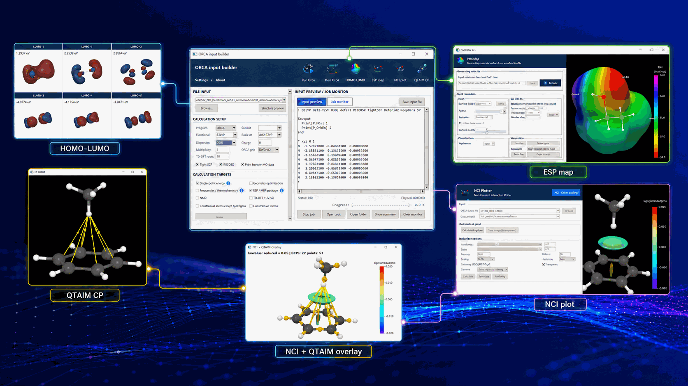
CrystEngKit is intended to run with Python 3.9 or newer on:
- Windows;
- Linux; and
- macOS.
The Orca Input Builder checks for installed Python interpreters on startup and uses the newest suitable Python it finds for companion tools such as:
- ESP;
- NCI; and
- QTAIM viewers.
ORCA, Multiwfn, and optional external tools must still be installed in versions suitable for your operating system.
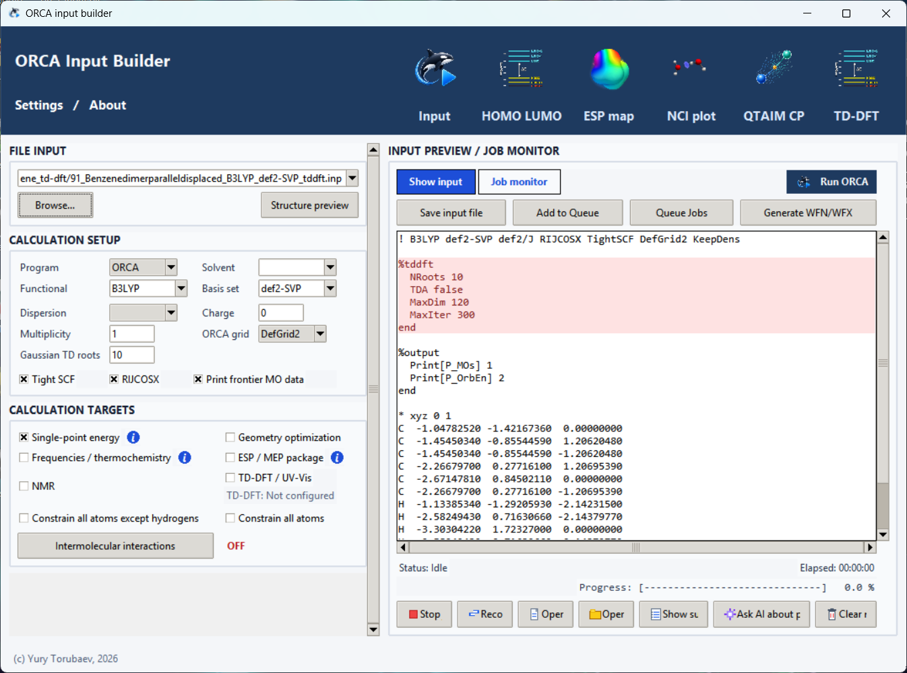
The main GUI is the ORCA Input Builderorca. It can:
- read molecular structures from
.cif,.xyz, ORCA.inp, 3D MOL/SDF files, ChemDraw CDXML/CDXM/CDX files, Gaussian input files, and external ORCA/Gaussian.out/.logfiles - prepare ORCA and Gaussiangaussian input files
- run ORCA and show live output
- organize saved ORCA inputs into named, persistent job queues and run them sequentially
- prepare a privacy-redacted ORCA-progress prompt for a selected browser AI service
- generate manuscript-ready computation summaries for experimental sections and supporting information
- configure TD-DFT/TDA absorption and emission workflows, UV-Vis spectra, and natural transition orbitals
- launch HOMO-LUMO, ESP, NCI, QTAIM, TD-DFT, and interaction-energy computations and visualizations.
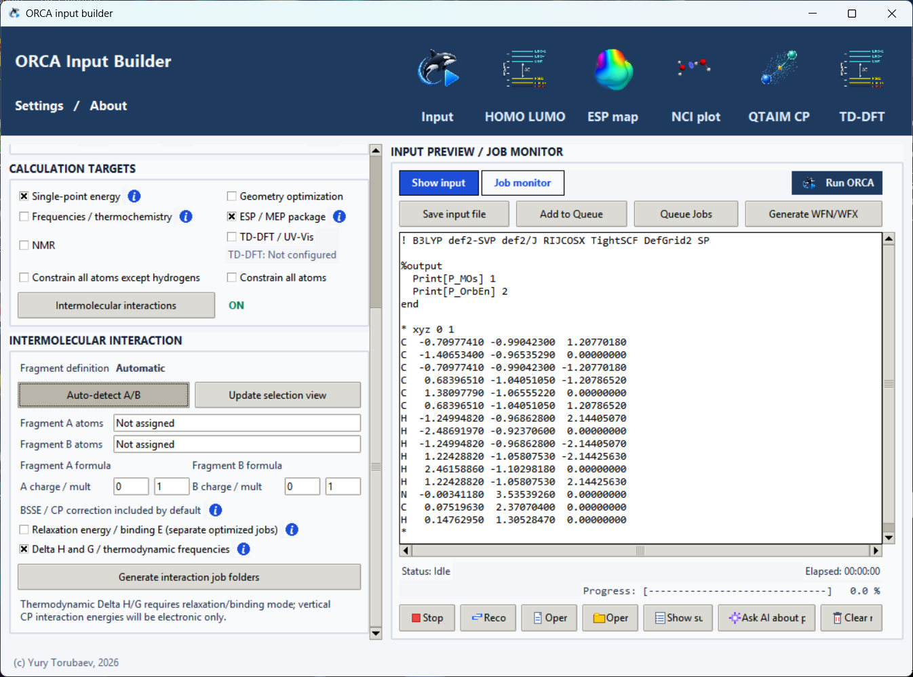
Installation and Requirements
Recommended: Windows web installer
For most Windows users, use the web .exe installer from the latest GitHub release:
<https://github.com/torubaev/crystengkit-orca-v1.0/releases>
Download the newest CrystEngKit-ORCA-Setup-*_web.exe, run it, and follow the setup window. The installer:
- prepares CrystEngKit;
- checks for Python and the required Python packages; and
- looks for ORCA and Multiwfn on your computer.
The same release package handles both installation and updating. The small web EXE downloads and SHA-256-verifies the full versioned installer. If the stable CrystEngKit application identity is already registered, setup performs an in-place update; otherwise it creates a new installation. Program files are updated while projects, user configuration, and the compatible managed .venv remain in place. The environment checker adds only requirements that are missing from the installed release.
Installed builds provide Update on the startup screen and in About. It checks the latest GitHub release, requires a published SHA-256 digest or checksum asset, downloads the web installer, and closes Builder only after the verified external updater starts. Development Git checkouts are never overwritten by this action.
If Windows warns about running a downloaded app, check that the file came from the official release page above before continuing. If your institution blocks downloaded installers, ask your local IT support to approve the file from the GitHub release page.
CrystEngKit uses external chemistry programs that must be installed separately:
- ORCA, for quantum-chemical calculations
- orca_2aim, from the ORCA package, for creating wavefunction files
- Multiwfn, for ESP, NCI, and QTAIM analysis
The installer does not install ORCA or Multiwfn, because they have their own official download pages and license terms. If the installer reports that one of them is missing, install it from the official source and run the installer again. On Windows, setup offers the Microsoft MPI Runtime as a checked optional component for parallel ORCA calculations. If MPI is skipped or cannot be installed, CrystEngKit automatically defaults generated ORCA inputs to one process.
Manual installation
Use manual installation only if the web installer is not suitable for your computer, or if you are installing on Linux or macOS.
You need:
- Python 3.9 or newer
- the Python packages listed in
requirements.txt - ORCA, orca_2aim, and Multiwfn for the full ESP, NCI, and QTAIM workflow
After downloading or cloning the repository, run the checker.
On Windows:
install\install.batOn macOS or Linux:
sh install/run_checker.shIf you prefer to install the Python packages yourself:
pip install -r requirements.txtor:
pip install numpy pyvista matplotlib periodictable gemmi PillowWhen the checker finishes, start the main program as described below.
Starting the Suite
Launch the main ORCA Builder with:
python tools/Orca_input/orca_input.pyOr double-click the tools/Orca_input/orca_input.py file.
At startup, the Builder displays a short splash while checking the local tool environment and may show a repository-maintained notice. Notices can be dismissed individually; failure to retrieve online notice data does not prevent the Builder from opening.
Tools
The Builder's top navigation changes the central workspace between:
- Input;
- HOMO LUMO;
- ESP map;
- NCI plot;
- QTAIM CP; and
- TD-DFT.
The active tool is highlighted and its name is shown at the left. Tool pages remain mounted while you switch, so the following remain available during the session:
- loaded files;
- selections;
- results; and
- scroll positions.
The Input button returns to the Builder without closing the active analysis page.
Molecular graphics use native PyVista viewer windows for:
- ESP;
- NCI; and
- QTAIM.
the visualization controls open in a narrow always-on-top panel beside the viewer. Changes are applied to the displayed model in real time. Closing the control panel does not close the viewer; use Viewer controls on the tool page to show it again. File choosers, confirmations, and error messages may still appear as ordinary dialogs.
ORCA Input Builder
The main working window can:
- prepare ORCA input files from
.cif,.xyz, existing.inp, or external ORCA/Gaussian.out/.logfiles; - run ORCA;
- monitor the output;
- generate computation summaries; and
- prepare dimer intermolecular-interaction jobs.
When an external output file is loaded, the Builder extracts the Cartesian coordinates printed in that output:
- the final optimized geometry for optimization jobs; or
- the printed input geometry for single-point jobs.
The right panel uses one large shared text window with a Show input / Job monitor switch. During a run, Show input displays the exact input being executed without regenerating or replacing it. Job monitor shows:
- live output;
- estimated stage progress; and
- elapsed time.
The monitor also provides:
- output and folder access;
- summary display;
- queue controls; and
- privacy-redacted AI progress-prompt generation.
Active jobs are recorded in the user configuration folder. If the Builder is closed while ORCA continues, reopening it offers to reconnect to the verified process; Reconnect provides the same action manually. A reconnected queue pauses after its current calculation.
Before rerunning a successfully completed job, the Builder warns that all same-basename result files may be overwritten and recommends a next unused name, such as filename_01.inp or filename_02.inp. Accepting the recommendation opens a Save As dialog prefilled with that name; ORCA starts only after the user saves the copied input under the suggested or another unused name. Choosing overwrite opens a second ATTENTION — Are you sure? confirmation.
The Builder tries to generate .wfn and .wfx files automatically after every successful ORCA run. For older calculations, use Generate WFN/WFX when the matching .out and .gbw files are available.
ChemDraw CDXML/CDXM import
The Builder natively reads ChemDraw .CDXML files. The structure must be checked in Structure preview before calculation.
TD-DFT Setup, Analysis, and Visualization
The TD-DFT workspace can prepare one calculation or run a complete absorption-to-emission workflow. It reuses these settings from Input:
- molecular structure;
- functional and basis set;
- dispersion correction;
- solvent;
- charge and multiplicity;
- constraints; and
- ORCA executable.
The TD-DFT page supplies:
- the TD-DFT/TDA choice;
- number of roots;
- target state; and
- solver settings.
Choosing NRoots and MaxDim
NRoots is the number of excited states requested (for example, 5 asks ORCA to calculate S1-S5 for a singlet calculation). MaxDim controls the maximum iterative solver space available for finding those states: a larger value can help difficult cases converge, but it also increases memory use and often the calculation time. CrystEngKit defaults to NRoots = 5 and automatically sets MaxDim = 4 × NRoots (20 for five roots). Changing NRoots recalculates MaxDim; the field remains editable for experienced users who need to tune the solver manually.
The complete workflow runs one required calculation at a time:
Starting molecular structure
-> S0 geometry optimization
-> optional S0 frequency check
-> vertical absorption at the optimized S0 geometry
-> optimization of the selected S1/Sn state
-> vertical emission at the optimized excited-state geometry
-> results and provenance reportTo start, use Run complete workflow... and:
- choose a project directory;
- review the summary; and
- confirm.
A later stage starts only after the preceding stage terminates normally and produces its required geometry and .gbw wavefunction. Any of the following stops the sequence instead of launching downstream jobs:
- a failed optimization;
- a missing file;
- an important imaginary frequency; or
- an inconsistent method.
Every generated TD-DFT/TDA job requests natural transition orbitals. After absorption or emission finishes, load its .out in Post-processing, select a state, and use Generate all analyses to prepare the NTO hole/electron cubes and the other supported density analyses. Spectrum tables and plots do not require Multiwfn; NTO cube generation requires the matching .gbw and a validated Multiwfn executable.
<details> <summary><strong>More details: inputs, outputs, continuation, and safeguards</strong></summary>
Starting inputs
For a new workflow, first load and inspect a molecular .cif, .xyz, or another supported structure in the Builder. The complete workflow reads the current Builder geometry and method directly; it does not require a second copy of those settings in TD-DFT.
Complete TD-DFT workflows always start from the molecular geometry currently loaded in Builder (.cif, .xyz, or another accepted geometry source) and write every stage into the newly selected project folder. Drop-in continuation from an external .out is disabled to prevent another molecule, geometry, or wavefunction from being mixed into the project. Existing .out files can still be loaded in Post-processing for analysis, but they cannot become a workflow starting stage.
Calculation sequence
01_S0_opt: optimizes the electronic ground-state geometry.02_S0_freq: optionally checks that the optimized S0 structure is a minimum. A substantial imaginary frequency changes the workflow toNEEDS_REVIEW.03_absorption: calculates vertical excited states at the optimized S0 geometry withoutOpt.04_S1_opt: optimizes the selected excited-state root starting from the optimized S0 geometry. For another selected root, the same stage represents Sn rather than necessarily S1.05_emission: calculates vertical emission at the optimized excited-state geometry without reusing the S0 geometry.
All principal stages use one consistent set of applicable settings:
- functional;
- basis set and auxiliary basis;
- dispersion correction;
- RIJCOSX choice;
- solvent treatment;
- grid;
- SCF setting; and
- TD-DFT/TDA choice.
Geometry and wavefunction handoffs are explicit: S0 products feed absorption and excited-state optimization, and excited-state products feed emission.
Project outputs
Each numbered directory contains, where applicable:
- the stage-specific
.inp; - the
.out; - the
.gbw; and - the extracted geometry.
The project also contains:
config.yaml
workflow_status.json
input/initial_geometry.xyz
results/<compound>_<functional>_<basis>_<solvent>_<tda-or-td-dft>_absorption-states.csv
results/<compound>_<functional>_<basis>_<solvent>_<tda-or-td-dft>_emission-summary.csv
results/<compound>_<functional>_<basis>_<solvent>_<tda-or-td-dft>_workflow-summary.json
results/<compound>_<functional>_<basis>_<solvent>_<tda-or-td-dft>_workflow-summary.csv
results/<compound>_<functional>_<basis>_<solvent>_<tda-or-td-dft>_provenance.json
restarts/workflow_status.json records these states:
NOT_STARTED;RUNNING;COMPLETED;FAILED; orNEEDS_REVIEW.
Completed calculations are not silently overwritten. Failed or interrupted artifacts are preserved under restarts/ before regeneration.
Processes and memory
Workflow stages are always sequential, but each individual ORCA job may use several processes. Processes = 1 runs serially and does not require an MPI launcher. Values above 1 require a working ORCA-compatible mpiexec installation. MaxCore is specified in MB per process, so the approximate requested memory increases with the number of processes.
Analysis outputs
Post-processing reads the following from a completed TD-DFT/TDA output:
- excitation energies;
- wavelengths;
- oscillator strengths; and
- printed orbital contributions.
When the required source files and external tools are available, it can export:
- state tables;
- broadened spectra;
- images and screenshots;
- NTO hole/electron cubes;
- difference and transition densities; and
- attachment/detachment results.
TD-DFT calculation and analysis filenames carry the calculation identity:
<compound>_<functional>_<basis>_[solvent]_<tda-or-td-dft>_<calculation-or-artifact>.<extension>Examples include:
B-OH_CAM-B3LYP_def2-SVP_CHLOROFORM_tda_absorption.out;B-OH_CAM-B3LYP_def2-SVP_CHLOROFORM_tda_absorption_uv-vis-spectrum.png; andB-OH_CAM-B3LYP_def2-SVP_CHLOROFORM_tda_absorption_NTO-pair.png.
The solvent part is omitted for gas-phase calculations. Export dialogs suggest these traceable names but still allow them to be edited before saving.
</details>
HOMO-LUMO Plotter
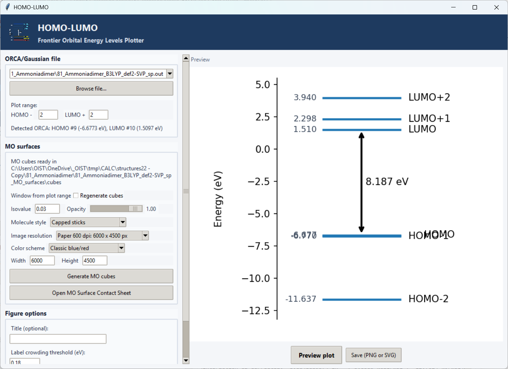
Creates frontier-orbital energy diagramsfrontier-orbitals from ORCA/Gaussian output or pasted orbital energies. For finished ORCA jobs, it can also:
- generate MO cube files with
orca_plot; - render HOMO/LUMO surface images; and
- collect saved orbital views into a table.
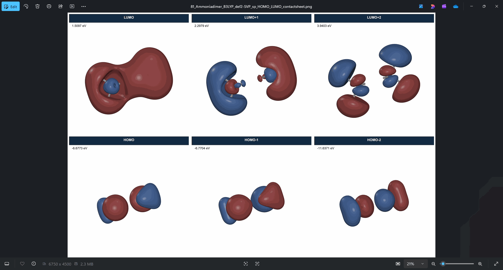
MO-surface tools use capped-sticks molecule rendering by default and provide optional colored wireframe or ball-and-stick overlays. In the table, each saved MO tile can be reopened with its saved:
- camera;
- style; and
- scale.
The Use view for all button applies the selected tile's saved orientation and zoom/scale to every MO surface in the current table.
ESP / VisMap
Creates electrostatic-potential maps on electron-density surfacesesp.
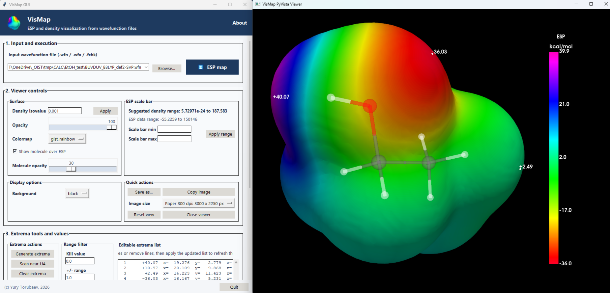
Resulting ESP map Image
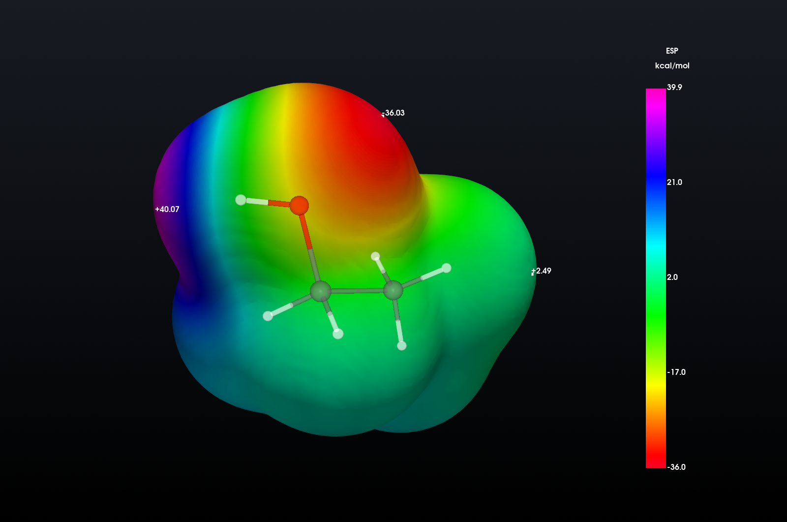
This version is based on the original VisMap code by aaan1s (<https://github.com/aaan1s/VisMap>) and adapts it for this suite with a GUI for:
- ESP data generation and plotting;
- extrema plotting; and
- PyVista visualization instead of Mayavi.
It uses wavefunction files such as:
.wfn;.wfx; or.fchk.
When the ESP map viewer opens, its visualization-control panel opens beside it. Use the panel to adjust:
- surface;
- molecule style;
- colors;
- range;
- opacity; and
- image output.
Changes appear immediately in PyVista. If the panel is closed, Viewer controls restores it.
NCI Plotter
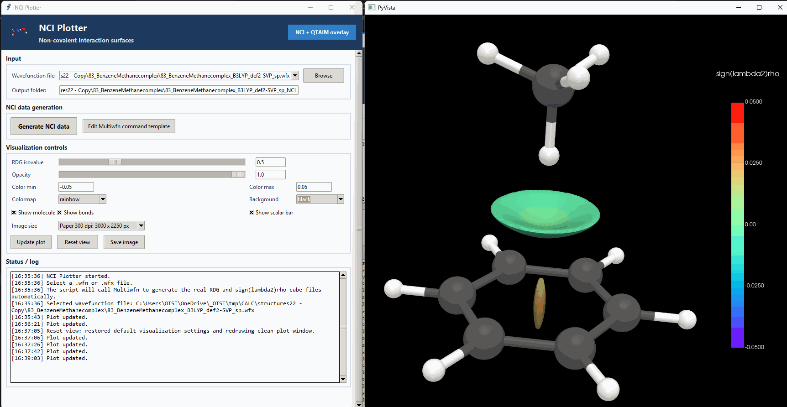
Creates noncovalent-interaction surfacesnci from .wfn or .wfx files. It is useful for visualizing:
- weak contacts;
- attractive regions; and
- repulsive regions in molecular associates.
It can also open the NCI + QTAIM overlay viewer when matching topology files are available.
The NCI viewer uses the same side-by-side control arrangement. Surface and molecule controls update the existing PyVista scene in real time; NCI opacity changes only the interaction surface, not the molecular model.
QTAIM Critical Points Viewer
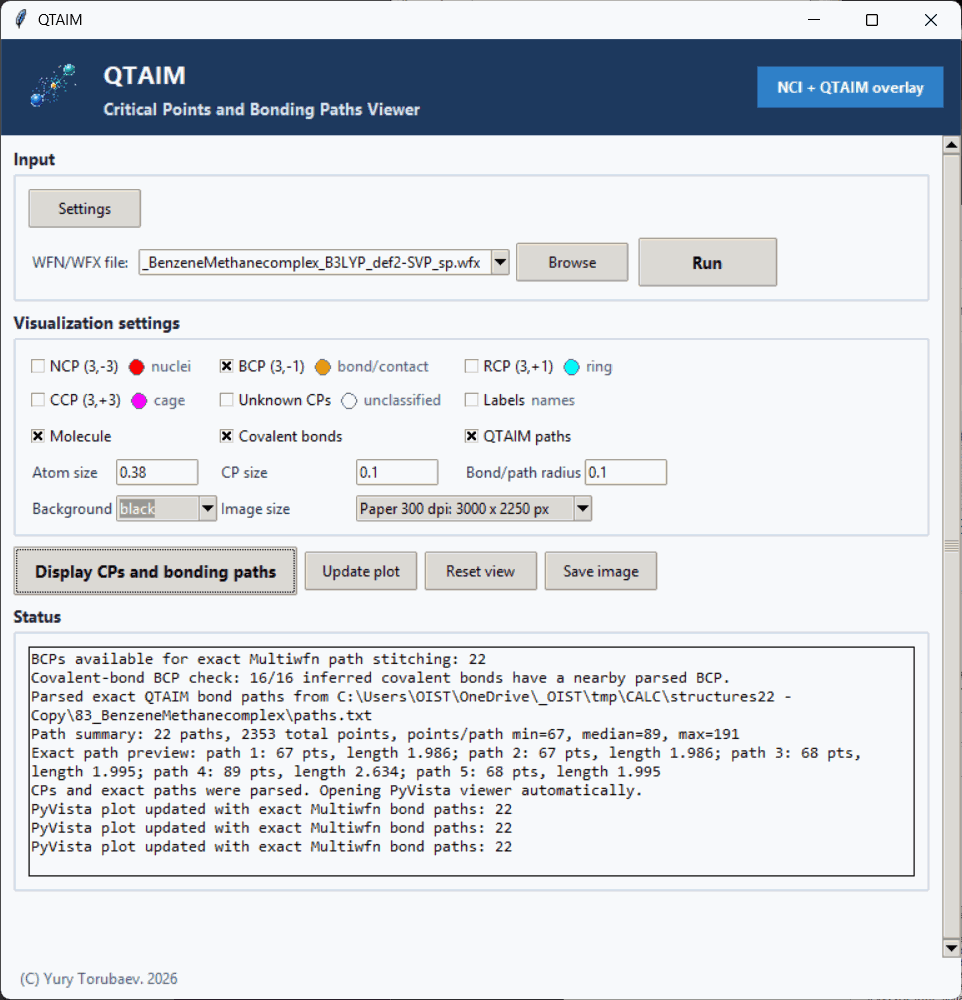
Shows these QTAIM critical pointsqtaim from .wfn or .wfx files and Multiwfn QTAIM output:
- bond;
- ring; and
- cage critical points.
The visualization settings include separate Strong interaction CPs and Weak interaction CPs checkboxes for BCP filtering, plus CP energy with kJ/mol or kcal/mol labels when CPprop.txt provides the required values. The color swatches in the visualization settings are clickable and can be used to change CP and QTAIM bond-path colors.
QTAIM visualization controls are kept in the narrow panel beside the PyVista viewer. Filtering, colors, labels, sizes, and display choices update the current scene without rebuilding the tool page. Use Viewer controls to restore a closed panel.
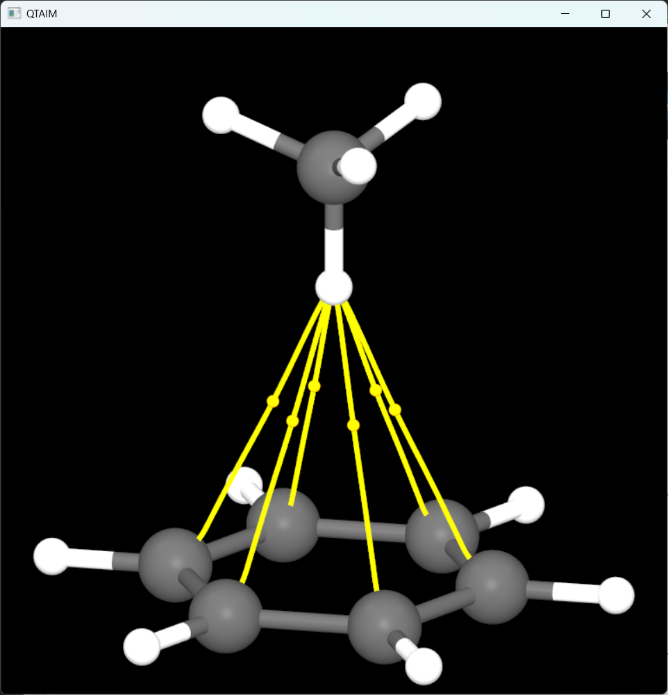
NCI + QTAIM Overlay
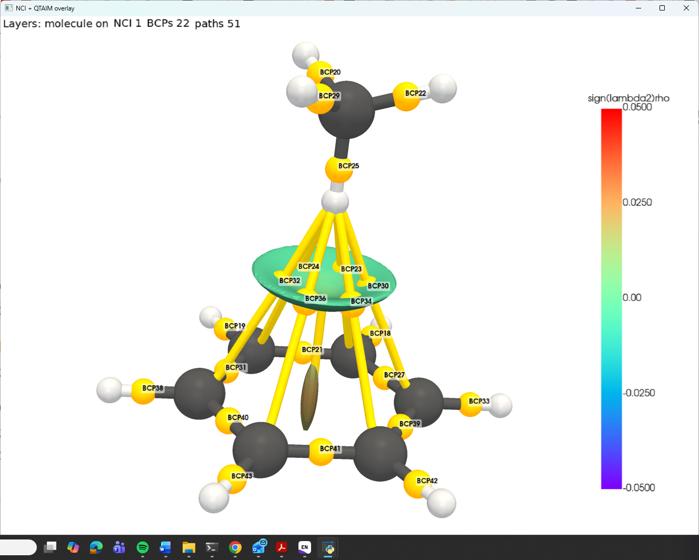
Combines the following in one PyVista view:
- molecular structure;
- NCI surface;
- QTAIM bond critical points; and
- bond paths.
Use it when the NCI and QTAIM output files have already been generated for the same structure.
How to Use the Tools
Build and Run an ORCA Job
- Load a supported structure file in the Builder.
Files read directly include:
- native
.xyzand.ciffiles; - ORCA
.inpfiles; - 3D
.mol,.sdf, and.sdfiles; and - ChemDraw
.cdxmland.cdxmfiles.
Gaussian files with ordinary Cartesian coordinates are also supported:
.gjf;.com;.gau; and.gjc.
Binary .cdx and 2D-only ChemDraw XML use Open Babel. External ORCA/Gaussian .out / .log files can also be imported; the Builder extracts the Cartesian coordinates printed in the output file and uses them as the starting structure for new input generation or follow-up processing.
- Check the geometry with
Structure previewif needed. The preview opens in a compact PyVista window with a black background. Imported structures should be inspected before calculation.
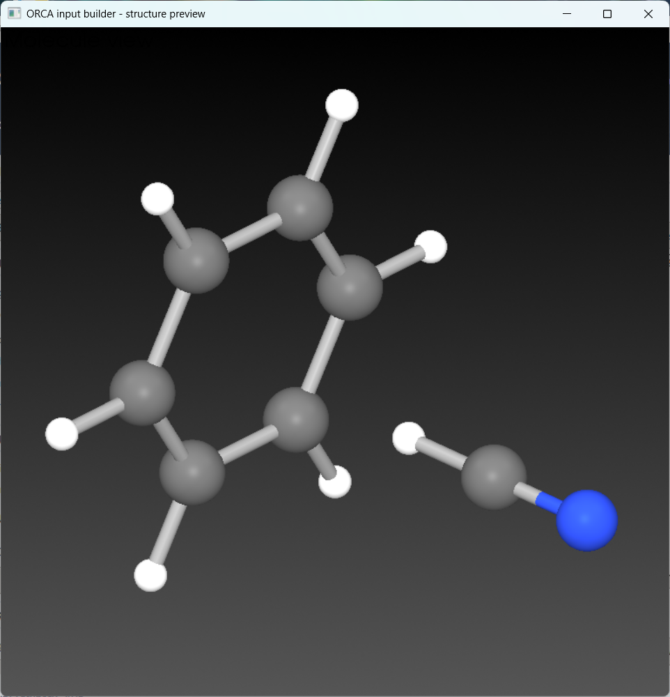
- Choose the calculation setup:
- functional;
- basis set;
- dispersion correction;
- solvent, or gas phase if no solvent is chosen or entered;
- charge; and
- multiplicity.
- Choose the target calculation, such as:
- single-point energy;
- optimization;
- frequencies;
- ESP package;
- TD-DFT;
- NMR; or
- dimer interaction energy.
- Use
Input previewin the shared right panel to generate or refresh the current.inptext, then useSave input file.
- Click
Run Orca. The shared right panel switches automatically toJob monitor, where the following are available:
- live output;
- status and progress;
- elapsed time;
- output-folder buttons;
- summary display; and
- monitor clearing.
To view an existing or generated summary, click Show summary; the text is shown in the Job monitor view.
Run ORCA Job Queues
Use Add to Queue to save the current input and add it to the active named queue. Queue Jobs opens the queue manager, where queues can be:
- created;
- selected;
- saved;
- loaded;
- reordered; and
- reset.
Jobs run sequentially and retain one of these statuses:
- pending;
- running;
- completed;
- failed; or
- stopped.
Queue state is stored in JSON so an interrupted list can be inspected or resumed after restarting the Builder.
Request an AI Progress Comment
In Settings, choose the browser AI service; ChatGPT is the default. While an ORCA output is available, click Ask AI about progress. CrystEngKit reads the complete available .out and removes:
- Cartesian-coordinate lines;
- absolute Windows paths;
- common filenames; and
- obvious credential fields.
It then builds a short progress-analysis prompt and copies it to the clipboard before opening the selected website. Paste the prompt and submit it in the browser.
The prompt asks only for:
- the current stage and convergence trend;
- evidence of looping or failure;
- the expected remaining stages;
- a cautious timing forecast; and
- whether to continue, monitor, or stop.
A marker at the end lets the AI detect a truncated paste; successful completeness checks stay out of the report, while missing-marker truncation must be reported. Redaction is a convenience filter, not a guarantee: review the prompt before sending confidential calculations to an external service.
Configure and Analyze a TD-DFT Job
Complete workflow: short version
- Load the starting structure in the Builder and verify the molecule with Structure preview.
- Set these options in the Builder:
- functional;
- basis;
- dispersion;
- solvent;
- charge and multiplicity;
- grid;
- TightSCF; and
- RIJCOSX.
- Enable TD-DFT / UV-Vis and select TD-DFT in the top navigation.
- Choose:
- TD-DFT or TDA;
- the number of roots; and
- the target state/root.
The root count defaults to 5. MaxDim starts as 4 × NRoots and is recalculated whenever the root count changes. MaxDim remains editable, so an experienced user can override the suggested value before generating the input. NTO preparation is enabled automatically for vertical calculations.
- Choose whether to validate S0 with a separate frequency calculation. Set
Processes = 1for a serial ORCA installation, or use more processes only when MPI is configured. - Click Run complete workflow..., then:
- choose a project directory;
- review the summary; and
- confirm.
- Let the program run these stages sequentially:
- S0 optimization;
- optional frequencies;
- absorption;
- excited-state optimization; and
- emission.
If a required stage fails or needs review, the workflow stops.
- Load the completed absorption or emission
.outin Post-processing to:
- plot the spectrum;
- export states; and
- generate NTO or density analyses.
For a single manually configured TD-DFT job instead of the full sequence, use Show ORCA Block to synchronize exactly one %tddft block with the Builder and run it normally.
Make Figures After a Calculation
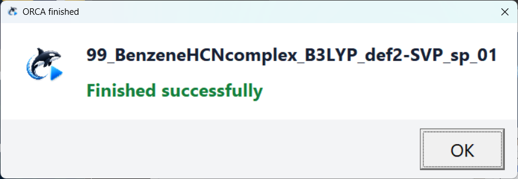
Use the top-panel buttons after the ORCA job finishes:
The currently active tool is highlighted in the top panel, and its name appears on the left side of the panel, so you can always see which workspace is open.
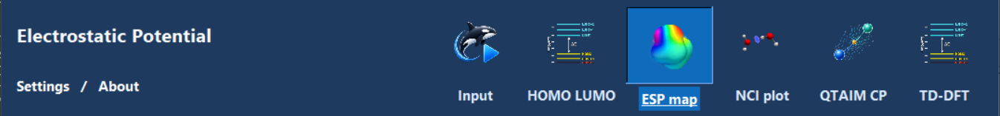
HOMO LUMOfor orbital energy diagrams and, from ORCA.out/.gbwpairs, MO surface images and contact sheetsESP mapfor electrostatic-potential surfacesNCI plotfor RDG / sign(lambda2)rho noncovalent-interaction surfacesQTAIM CPfor critical-point inspection
These analyses require real wavefunction files such as .wfn or .wfx:
- ESP;
- NCI; and
- QTAIM.
In CrystEngKit they are generated automatically by default after the ORCA job finishes. If an older project does not contain them, load or select the corresponding ORCA output and click Generate WFN/WFX; this uses orca_2aim and requires the matching .gbw file to be present.
MO surface rendering requires:
- a finished ORCA
.outfile; - its matching
.gbwfile; and orca_plotfrom the ORCA installation.
For consistent MO surface figures, orient and zoom one saved contact-sheet tile, press S in the MO viewer to save it, then use Use view for all from that tile to regenerate the rest of the current contact sheet with the same view and scale.
Dimer Interaction Energy
- Load a dimer structure file.
- Enable
Intermolecular interaction energy (dimer)by checking the respective checkbox.
- Assign fragments automatically or manually.
- Use the viewer to check the fragment assignment.
- Choose whether to include relaxed binding analysis and thermodynamic terms.
- Run ORCA and review the final summary for the calculated energies (uncorrected, BSSE, and CP-corrected) and the experimental section.
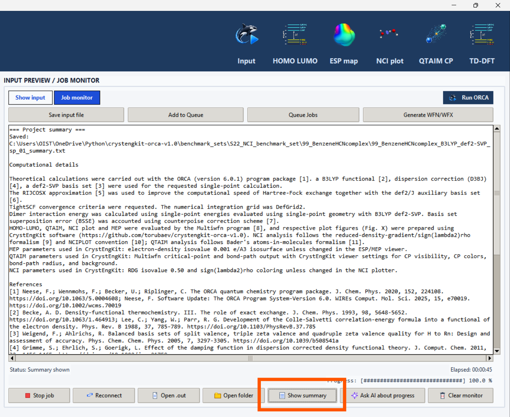
As a practical check, BSSE counterpoise-corrected intermolecular energies produced by the Builder for S22 examples at B3LYP/def2-SVP showed good agreement with the S22 reference values. The good agreement with the S22 reference values supports the consistency of the computational script logic of CrystEngKit ORCA Input Builder, rather than serving as a direct comparison to the higher-level S22 benchmark methodology. The BEGDB S22 reference values are based on MP2/CBS extrapolation from cc-pVTZ to cc-pVQZ plus a CCSD(T) correction in a modified cc-pVTZ basis set: http://www.begdb.org/index.php?action=oneDataset&id=4&state=show&order=ASC&by=name_m&method=
Modeling of Solvation Effects
The Solvent field adds an implicit-solvent model. For ORCA, the Builder uses the SMD modelsmd through the %cpcm blockpcm. Choose a solvent from the dropdown menu, or use Other solvent... for a custom ORCA-recognized solvent name.
Glossary
This short glossary explains the quantum-chemistry terms that appear in the Builder. It is not meant to replace a textbook; it is a quick practical guide to what the options mean before you click Run Orca.
Main Calculation Types
Single-point energy A calculation of the energy and electronic structure at one fixed geometry. The atoms do not move. Use it when you trust the geometry and want the energy or properties at that structure. FACCTs: Basic calculation settings.
Geometry optimization A calculation that moves the atoms to find a nearby low-energy structure. In practical terms, ORCA changes the geometry step by step until the forces become small. Wiki: Energy minimization. FACCTs: Geometry optimizations.
Frequencies / thermochemistry A vibrational-frequency calculation. It is used to check whether an optimized structure is a minimum and to estimate thermochemical quantities such as enthalpy and Gibbs free energy. Wiki: Molecular vibration. FACCTs: Vibrational frequencies.
TD-DFT / UV-Vis Time-dependent DFT is commonly used to estimate electronic excitations and UV-Vis absorption bands. Wiki: Time-dependent density functional theory. FACCTs: Excited states via RPA, CIS, TD-DFT and SF-TDA.
NMR calculation A calculation of NMR-related properties such as nuclear shielding, which can be converted or compared with chemical shifts. Wiki: Nuclear magnetic resonance spectroscopy. FACCTs: Nuclear Magnetic Resonance parameters.
Method Setup
DFT Density functional theory is a widely used quantum-chemistry approach where the electron density is the central quantity. Wiki: Density functional theory. FACCTs: Density Functional Theory.
Functional The chosen DFT approximation, such as B3LYP, PBE0, or wB97X-D. The functional strongly affects energies, geometries, noncovalent interactions, and predicted properties. Wiki: Density functional theory. FACCTs: Density Functional Theory.
Basis set The mathematical functions used to describe molecular orbitals. Larger basis sets usually give better accuracy but take more time. Wiki: Basis set in quantum chemistry. FACCTs: Basis sets.
Dispersion correction An added correction for London dispersion interactions, which are important for crystal packing, pi-stacking, halogen bonding, and many weak contacts. Wiki: London dispersion force. FACCTs: Dispersion corrections.
Charge The total charge of the molecule or molecular assembly. A neutral molecule usually has charge 0; a cation might be +1; an anion might be -1. Wiki: Electric charge. FACCTs: Input of coordinates.
Multiplicity The spin state of the system. Closed-shell organic molecules are usually singlets with multiplicity 1. Radicals and metal complexes may require other values. Wiki: Multiplicity in quantum chemistry. FACCTs: Input of coordinates.
SCF Self-consistent field procedure. This is the iterative process used to solve the electronic structure. If SCF does not converge, the calculation cannot reliably finish. Wiki: Self-consistent field. FACCTs: Self-Consistent-Field.
Tight SCF A stricter SCF convergence setting. It asks ORCA to converge the electronic structure more carefully, which is often useful for cleaner final energies and post-processing. FACCTs: SCF convergence settings.
ORCA grid The numerical integration grid used in DFT calculations. A finer grid can improve accuracy and stability, but it increases calculation time. FACCTs: Numerical integration grids.
RIJCOSX An ORCA approximation that can speed up hybrid DFT calculations. For many routine calculations, it gives a useful speed improvement with very small practical loss of accuracy. FACCTs: Resolution-of-the-Identity.
Solvent and Environment
Implicit solvent A calculation where the solvent is represented as a continuous medium instead of explicit solvent molecules. This is useful when you want approximate solution effects without building many solvent molecules. Wiki: Implicit solvation. FACCTs: Implicit solvation.
CPCM / PCM A common family of continuum solvent models. In ORCA, CPCM settings are often used as part of the solvent setup. Wiki: Polarizable continuum model. FACCTs: Implicit solvation.
SMD A solvation model commonly used for solution-phase DFT calculations. In the Builder, selecting a solvent for ORCA uses the SMD route through the %cpcm block when appropriate. Wiki: Solvent model. FACCTs: The SMD solvation model.
Orbitals and Plots
HOMO Highest occupied molecular orbital. It is the highest-energy orbital that contains electrons. Wiki: HOMO/LUMO. FACCTs: Orbital and density plots.
LUMO Lowest unoccupied molecular orbital. It is the lowest-energy orbital that is empty in the ground-state electron configuration. Wiki: HOMO/LUMO. FACCTs: Orbital and density plots.
HOMO-LUMO gap The energy difference between the HOMO and LUMO. It is often used as a rough descriptor of electronic softness, reactivity, or optical/electronic behavior, but it should not be overinterpreted alone. Wiki: HOMO/LUMO. FACCTs: Orbital and density plots.
ESP / MEP Electrostatic potential, also called molecular electrostatic potential. It helps visualize electron-rich and electron-poor regions on a molecular surface. This is useful for discussing hydrogen bonding, halogen bonding, electrophilic/nucleophilic regions, and molecular recognition. Wiki: Electric potential. FACCTs: Electrostatic potentials.
Electron-density surface A molecular surface defined by a chosen electron-density value. Wiki: Electron density. FACCTs: Orbital and density plots.
Extrema plotting Marking local minima and maxima of the electrostatic potential. These points can help identify likely attractive or repulsive regions around a molecule.
NCI Analysis
NCI Noncovalent interaction analysis. It helps visualize weak interactions such as hydrogen bonds, halogen bonds, pi-stacking, dispersion contacts, and steric repulsion. Wiki: Non-covalent interactions index.
RDG Reduced density gradient. In NCI plotting, an RDG isosurface is colored by a density-related quantity to show attractive, weak, and repulsive regions. Wiki: Non-covalent interactions index.
sign(lambda2)rho A common NCI coloring quantity. Negative values are usually associated with attractive interactions, values near zero with weak van der Waals contacts, and positive values with steric repulsion. Interpret the colors together with the structure and chemical context. Wiki: Non-covalent interactions index.
QTAIM Analysis
QTAIM Quantum Theory of Atoms in Molecules. It analyzes the topology of the electron density and is often used to discuss bonding, bond paths, and critical points. Wiki: Atoms in molecules. FACCTs: Utility programs.
Critical point A point in the electron density where the gradient is zero. Different kinds of critical points correspond to nuclei, bonds, rings, or cages. Wiki: Atoms in molecules.
BCP Bond critical point. In QTAIM, a BCP is often discussed in connection with a bond path between atoms. Its presence should be interpreted chemically, not treated as automatic proof of a conventional bond. Wiki: Atoms in molecules.
Strong and weak interaction CPs In the QTAIM viewer, BCPs can be filtered as strong or weak interactions using local CP properties such as H(r), |V|/G, the Laplacian, and rho when available.
CP energy labels The CP energy checkbox shows an energy label for selected CPs, using 0.5V(r) when Multiwfn exports V(r), with units chosen as kJ/mol or kcal/mol.
RCP and CCP Ring critical point and cage critical point. These appear in ring-like or cage-like topological features of the electron density. Wiki: Atoms in molecules.
Bond path A path through the electron density connecting atoms through a bond critical point. Bond paths are useful for visual discussion of QTAIM results. Wiki: Atoms in molecules.
Dimer and Interaction-Energy Terms
Dimer A pair of molecules or molecular fragments treated together in one calculation. In crystal-engineering work, this is often used to study a contact or molecular pair from a crystal structure. Wiki: Dimer. FACCTs: Counterpoise corrections.
Fragment A / Fragment B The two parts of a dimer. Correct fragment assignment matters because interaction energies and counterpoise correction depend on which atoms belong to each fragment. FACCTs: Fragment specification.
Interaction energy The energy difference between the dimer and the separated fragments, usually computed to estimate how strongly two fragments interact. Wiki: Interaction energy. FACCTs: Counterpoise corrections.
Binding energy Often used similarly to interaction energy, but the exact meaning depends on whether geometry relaxation, thermal terms, and basis-set corrections are included. Always check what definition is being used. Wiki: Binding energy.
BSSE Basis-set superposition error. It occurs when fragments in a dimer artificially benefit from each other's basis functions, making the interaction look too strong. Wiki: Basis set superposition error. FACCTs: Counterpoise corrections.
Counterpoise correction A correction used to estimate and reduce BSSE in interaction-energy calculations. Wiki: Basis set superposition error. FACCTs: Counterpoise corrections.
Ghost atoms / ghost basis Basis functions placed on atoms that are not actually present as nuclei/electrons in a fragment calculation. They are used in counterpoise correction. FACCTs: Counterpoise corrections.
Relaxation energy The energy change associated with allowing a fragment or complex to relax from one geometry to another. It helps distinguish frozen-geometry interaction from geometry-relaxed binding.
Delta H and Delta G Changes in enthalpy and Gibbs free energy. These require thermochemical information from frequency calculations and are more expensive than a simple electronic interaction energy. Wiki: Enthalpy and Gibbs free energy. FACCTs: Vibrational frequencies.
Examples and Benchmark Data
The benchmark_sets/S22_NCI_benchmark_set/ folder contains the S22 benchmark structures for training, testing, and evaluation of CrystEngKit calculations. The S22 data are provided as reference examples, not as newly generated CrystEngKit results. The examples/ folder is currently left empty and reserved for future examples.
When using S22 or other BEGDB-derived benchmark data, cite both the original paper(s) attached to the respective BEGDB record and the BEGDB database paper itselfbegdb.
Troubleshooting
ORCA does not start
Check:
Settings-> ORCA executable path- whether
orca/orca.exeexists and is accessible
HOMO-LUMO button does not work
Check:
- that a valid ORCA output exists
- that the HOMO-LUMO script path in
Settingsis correct
For MO surface images, also check:
- that the matching
.gbwfile is next to the ORCA.outfile - that
orca_plotis available from the ORCA installation - that
numpy,pyvista, andPilloware installed
ESP map does not work
Check:
- that the ORCA run produced a usable
.wfn,.wfx, or.fchkfile - that
orca_2aimand Multiwfn are available - that the ESP script path and Python command are correct
For older ORCA outputs without .wfn / .wfx, click Generate WFN/WFX in the Builder. The matching .gbw file must be in the same folder as the .out file.
NCI plot does not work
Check:
- that the ORCA run produced a usable
.wfnor.wfxfile - that Multiwfn is available and selected in the NCI Plotter
- that the NCI Plotter script path and Python command are correct
- that the Multiwfn command template matches your installed Multiwfn version
QTAIM CP does not work
Check:
- that the ORCA run produced a usable
.wfnor.wfxfile - that Multiwfn is available and selected in the QTAIM Critical Points Viewer
- that the QTAIM CP script path and Python 3.9+ command are correct in
Settings - that Multiwfn is able to complete the QTAIM critical-point search for your structure
- that the selected file is from a completed calculation, not a failed or unfinished job
Structure preview does not open
Check:
numpypyvistamatplotlibperiodictable
Interaction calculation finishes only partly
This can happen when:
- frozen interaction jobs succeed
- but a later relaxed or thermodynamic follow-up job fails
In that case, the summary should still preserve the successful interaction terms and report a crash note.
TD-DFT spectrum or NTO analysis is unavailable
Check that the selected file is a completed ORCA TD-DFT/TDA .out. Spectrum plotting needs parsed excited-state energies and oscillator strengths. NTO generation additionally needs:
- the matching
.gbw; - a validated Multiwfn executable; and
- ORCA output produced with the module's NTO defaults.
Use Refresh files after copying associated files beside the output. A status marked disabled is intentional when the required files or a release-verified workflow are unavailable.
AI progress prompt opens the wrong service or appears truncated
Choose the service in Builder Settings and save it; older saved Gemini defaults are migrated to ChatGPT. The browser workflow uses the full output file rather than the GUI's size-limited monitor buffer. If the AI reports that the completion marker is missing, the paste or provider input was truncated and its diagnosis should not be trusted. Shorten the supplied output manually or use a service with a larger input limit.
How to cite CrystEngKit-ORCA
If CrystEngKit-ORCA is useful for preparing calculations, analyzing ORCA/Multiwfn results, or making figures for a manuscript or supporting information, please cite the GitHub software repository:
Torubaev, Y. CrystEngKit-ORCA: practical GUI tools for ORCA and Multiwfn calculations in supramolecular chemistry and crystal engineering, version 1.0; GitHub, 2026. <https://github.com/torubaev/crystengkit-orca-v1.0>
For EndNote, Zotero, Mendeley, or other bibliography managers, import the RIS file: docs/crystengkit-orca.ris.
Repository contents
Typical root structure:
README.md
LICENSE
docs/
build_gpt_knowledge.py # rebuilds the custom-GPT knowledge bundle
gpt_knowledge/ # upload-ready user-assistant reference files
images/ # README/wiki screenshots and figures
install/
examples/ # reserved for future examples
benchmark_sets/
S22_NCI_benchmark_set/
tools/
images/ # shared tool icons
Orca_input/
TD_DFT/
HOMO_LUMO/
VisMap_5.0/
NCI_plot/
NCI_QTAIM_overlay/
qtaim-cp/
shared/